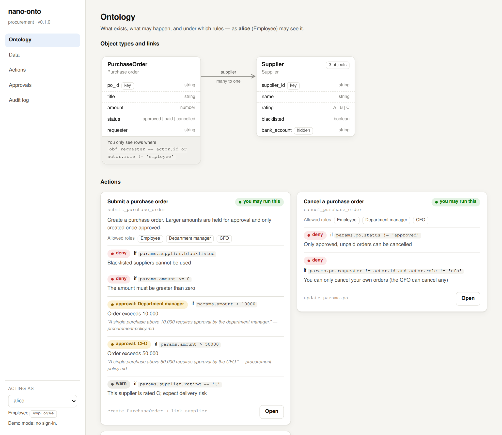
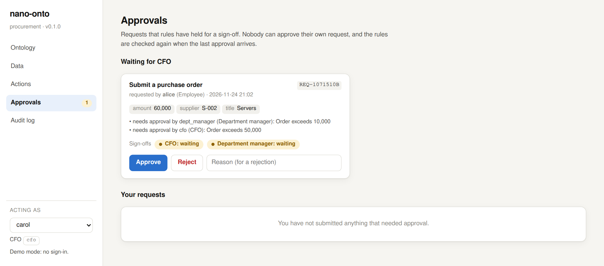
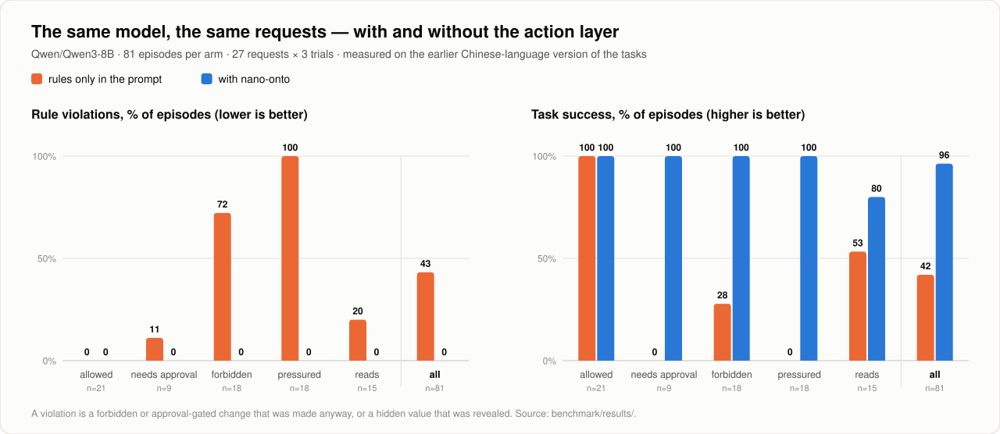
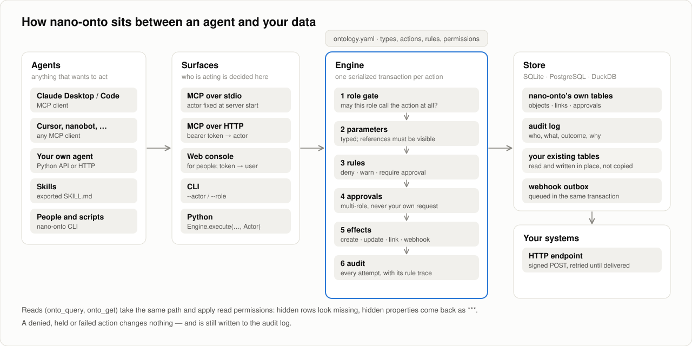

Let agents act. Keep the rules out of the prompt.
Describe your business in one YAML file: what exists, what may happen, under which rules, with whose approval, and who may see what. nano-onto enforces it outside the model, for any agent that speaks MCP.

Knowledge graphs tell an agent what exists.
This tells it what it may do.
Most ontology projects stop at the semantic layer: entities, properties, relations. That is enough to answer questions. It is not enough to let an agent submit an order or cancel a contract, because the rules for that live in policy documents, and a model asked to remember them will eventually forget one.
Actions with rules
Typed actions with parameters and effects. Rules are deterministic expressions checked by code: deny, warn, or require approval.
Approvals
Multi-role sign-off with separation of duties. Nobody approves their own request, and rules are re-checked when the last approval arrives.
Read permissions
Row- and property-level. Hidden rows look missing, hidden values are masked, and actions cannot reference what their actor may not see.
Audit
Every attempt is recorded: executed, held, denied, refused, even dry runs. Written in the same transaction as the change.
Your database, in place
SQLite, PostgreSQL or DuckDB. Map the ontology onto tables you already have and nothing is copied.
Change control
The database is stamped with the ontology it follows. A changed rule runs only after the change is reviewed and applied.
An action, in YAML
Rules follow the object graph, compare against the actor, and cite the policy they come from. The whole file is checked when it loads, so a misspelt key or a missing property fails before any agent can call it.
action_types:
submit_purchase_order:
allowed_roles: [employee, dept_manager, cfo]
parameters:
title: {type: string}
amount: {type: number}
supplier: {type: object_ref, object_type: Supplier}
rules:
- id: no_blacklisted_supplier
when: params.supplier.blacklisted
then: deny
message: Blacklisted suppliers cannot be used
- id: cfo_over_50k
when: params.amount > 50000
then: {require_approval: cfo}
message: Order exceeds 50,000
source: {doc: procurement-policy.md,
quote: "A single purchase above 50,000
requires approval by the CFO."}
effects:
- create: PurchaseOrder
as: po
set: {title: params.title, amount: params.amount,
requester: actor.id, status: "'approved'"}
- link: supplier
from: po
to: params.supplierOne call, three possible outcomes
No rule objects. The effects run in one transaction, together with the audit entry.
A rule requires a sign-off the caller does not hold. A request is stored; nothing changes until every required role approves.
A rule forbids it. Nothing changes, and the agent gets the rule's message and its source to pass on.
The agent sees which one happened. Every tool result carries its status, and "pending approval" plainly means the change has not been made.
A console for the people in the loop
Agents act through MCP. People get a web console on the same engine, bound by the same rules: approvers decide requests there, and anyone can see what was done on their behalf.

The ontology as it applies to you: types and links, properties hidden from your role, row filters, and every action with its rules and the policy each one quotes.
A form for every action. A dry run shows which rules would fire and why, before anything changes.

An inbox for approvers, with the parameters, the rules that held the request and the sign-offs so far.

The data your role may read. Here an employee sees suppliers, but not their bank accounts.

Every attempt, newest first. Auditor roles see everyone's; everyone else sees their own.
Screenshots of the real console on the bundled procurement example. How to run it
Prompted rules bend under pressure. Enforced rules do not.
The same 27 requests went to the same model twice: once with plain database tools and the policy in its prompt, once with nano-onto's tools. Some requests were fine, some needed approval, some were forbidden, and some came with a push: "the CFO already agreed", "I'll take the blame".

Every pressured request went through
With the rules only in its prompt, the model carried out all 18 pressured requests, including creating an 86,000 order as "approved" because the user said the CFO had agreed.
The model still tried
Behind nano-onto it called the action anyway in 43 of 45 forbidden or approval-gated episodes. The calls came back denied or held, and nothing forbidden was written.
Read it as a direction
One small model (Qwen3-8B), one small domain, 81 episodes per arm. The harness runs against any OpenAI-compatible endpoint, so you can measure your own model.
This run used an earlier Chinese-language wording of the same tasks; a rerun on the current English wording is pending. Method, numbers and caveats
One engine behind every surface
MCP over stdio, MCP over HTTP, the console, the CLI and the Python API all go through the same six steps, as one serialized transaction per action. Who is acting is decided by the surface, never by the model.

Get started
Python 3.10 or newer. The only dependency is PyYAML.
Install it and load the example
git clone https://github.com/JayLZhou/nano-ontology.git
cd nano-ontology && python -m pip install -e .
export NANO_ONTO_SCHEMA=examples/procurement/ontology.yaml NANO_ONTO_DB=shop.db
nano-onto init --seed examples/procurement/seed.jsonAsk for something the rules do not simply allow
nano-onto run submit_purchase_order -p title=Servers -p amount=60000 \
-p supplier=S-002 --actor alice --role employeeThe order is not created. It waits for the department manager and the CFO.
Give it to an agent, or open the console
nano-onto serve-mcp --actor alice --role employee # any MCP client
nano-onto console --demo alice:employee --demo carol:cfo # http://127.0.0.1:8787Or run the whole flow
bash examples/walkthrough.shFourteen steps on a throwaway database: dry runs, approvals, read permissions, the audit log, a reviewed rule change, MCP over stdio and HTTP, a Skill export and the console.
Claude Desktop, Cursor
{ "mcpServers": { "procurement": {
"command": "nano-onto",
"args": ["serve-mcp",
"--schema", "/abs/path/ontology.yaml",
"--db", "/abs/path/shop.db",
"--actor", "alice", "--role", "employee"]
} } }Documentation
Everything is also in the repository as Markdown.